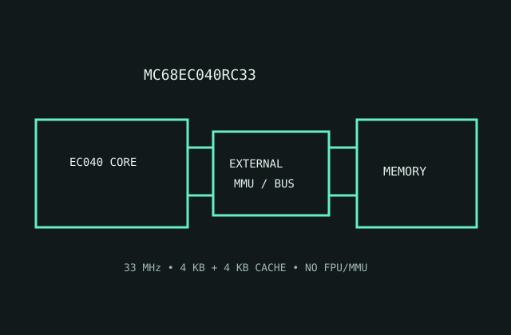

[ MOTOROLA 68000 FAMILY // EMBEDDED-CONTROL 68040 ]
Motorola MC68EC040RC33
A 33 MHz embedded-control 68040 that integrates caches but omits both the full MMU and hardware floating-point unit.

MODEL IDENTIFICATION: MC68EC040RC33, 33 MHz EC040 ceramic PGA variant. EC means reduced feature set; verify the exact revision and package code.
Recorded specifications
| Model | MC68EC040RC33. |
|---|---|
| Generation | Embedded-control derivative of the fourth-generation 68000/68040 family. |
| Architecture / cores | Motorola 68040 CISC architecture; one 32-bit core; this EC configuration omits integrated MMU and FPU functions. |
| Frequency / cache | 33 MHz speed grade; 4 KB instruction and 4 KB data caches. |
| Package / socket | RC ceramic PGA; use the dedicated EC040-compatible footprint and pinout. Do not assume the board socket supports the full 68040 feature variants. |
| Power | 5 V nominal supply. No modern TDP; calculate regulator and cooling requirements from the EC040 33 MHz maximum-current and dissipation specifications. |
| Memory / bus | 32-bit external data/address paths; external MMU, memory controller and DRAM are system requirements when address translation is needed. |
| Board compatibility | Requires an EC040 board with matching PGA, 5 V signaling and 33 MHz timing; software relying on hardware FPU/MMU requires alternative support. |
Compatibility notes
- Confirm external address-translation logic before booting an OS configured for full 68040 hardware.
- FPU-dependent workloads may trap or require software emulation.
- Check cache-control wiring, reset setup, board timing and package-specific thermal limits.
Sources & further reading
- Motorola MC68EC040 User's Manual (Bitsavers technical archive)Manufacturer EC040 manual archive for bus, cache, package and omitted-feature details.
- Motorola MC68040 Designer's Handbook (Bitsavers)Manufacturer system-design handbook archive for board and electrical considerations.